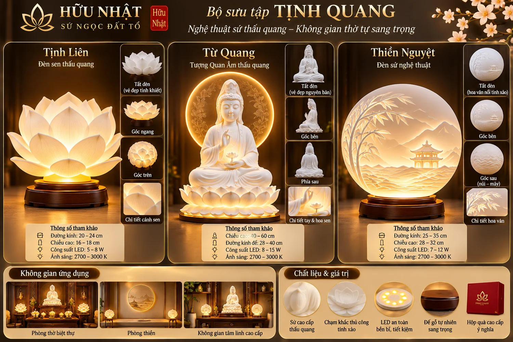
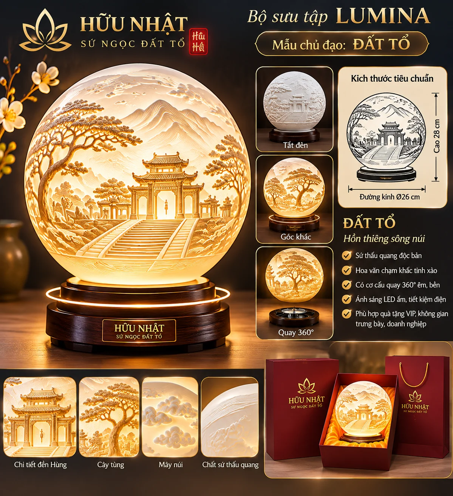

Thiết kế ý tưởng
TỊNH QUANG
Đèn sen Tịnh Liên, tượng Từ Quang và đèn đĩa sứ Thiền Nguyệt – ngôn ngữ nghệ thuật tâm linh hiện đại.
Xem chi tiếtKhám phá những ý tưởng nghệ thuật sứ thấu quang mang cảm hứng văn hóa Việt, dành cho biệt thự, không gian thờ tự và những tác phẩm đặt riêng.
Khám phá bộ sưu tậpCác hình ảnh dưới đây là thiết kế ý tưởng bằng AI để lựa chọn ngôn ngữ tạo hình và phát triển mẫu thử, không phải ảnh sản phẩm đã được chế tác hoặc đang bán.
Đèn sen Tịnh Liên, tượng Từ Quang và đèn đĩa sứ Thiền Nguyệt – ngôn ngữ nghệ thuật tâm linh hiện đại.
Xem chi tiết
Thiết kế đèn sứ lấy cảm hứng từ cảnh quan và kiến trúc Đền Hùng; họa tiết cần đối chiếu bản gốc trước chế tác.
Xem chi tiết
Ngôn ngữ đèn sứ nghệ thuật đương đại, hướng tới nội thất cao cấp và quà tặng thiết kế riêng.
Yêu cầu thiết kếThiết kế cho những không gian đề cao sự tĩnh lặng và chiều sâu thẩm mỹ.

Định hướng tác phẩm văn hóa lấy cảm hứng từ cội nguồn dân tộc. Hình ảnh minh họa chưa được xác nhận độ chính xác kiến trúc, hoa văn và thông số chế tác.
Thiết kế cần được dựng lại theo ảnh Đền Hùng gốc và đánh giá bởi nghệ nhân trước khi tạo khuôn.
Chưa sản xuất thương mại
Hình ảnh AI đã phát triển cho Hữu Nhật. Tất cả đang ở giai đoạn thiết kế ý tưởng, chưa xác nhận tính khả thi chế tác hoặc giá bán.
Tiếp nhận không gian sử dụng, phong cách, kích thước và số lượng.
Phác thảo mẫu và kiểm tra khả năng chế tác, kỹ thuật, chi phí với xưởng.
Làm mẫu và kiểm tra thực tế trước khi thống nhất đơn hàng.
Hữu Nhật là định hướng thương hiệu gắn với nghệ thuật sứ và khả năng phát triển tác phẩm theo yêu cầu. Phần tiểu sử, kỹ thuật chế tác, giải thưởng và hình ảnh xưởng sẽ được bổ sung sau khi xác minh với nghệ nhân.
Gửi ý tưởng cho biệt thự, phòng thờ, dự án nội thất hoặc quà tặng doanh nghiệp. Có thể nêu kích thước, phong cách và số lượng dự kiến.
Bản xem thử: biểu mẫu chỉ tạo nội dung để sao chép, chưa gửi dữ liệu đến bất kỳ nơi nào.